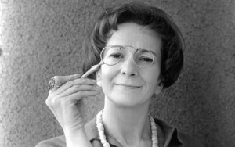
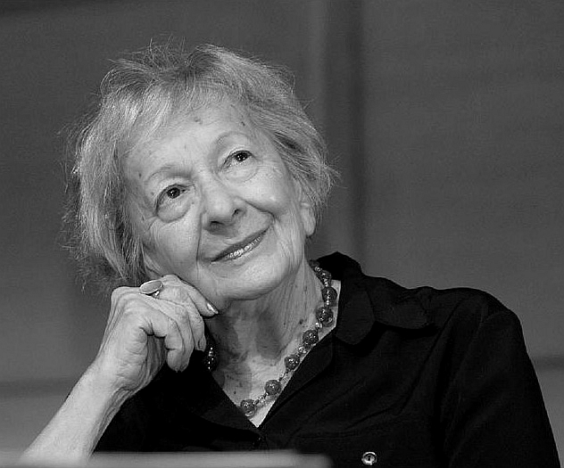

WISLAWA SZYMBORSKA [1923 - 2012]
Kể từ năm 1957, Szymborska [Sinh 1923] đã cho xuất bản những tập thơ mỏng nhưng thật mạnh mẽ, một ít cuốn phê bình sách và những bản dịch có uy tín về thơ tiếng Pháp. Với giải Nobel dành cho thơ nêu lên được những vấn đề sâu sắc về tâm thức và triết lý bằng ngôn ngữ trữ tình, Szymborska đã trở thành người thứ tư của Ba Lan và người phụ nữ thứ chín đoạt giải Nobel.
Công bố sự lựa chọn này, Viện Hàn Lâm Thụy Điển đã miêu tả bà là “Mozart của thi ca nhưng còn có một cái gì như sự mãnh liệt của Beethoven trong những thi phẩm của mình”.
Sinh ngày 2/7/1923 trong ngôi làng Bnin, gần Poznan, bà theo học văn học tại Krakow, thủ đô văn hóa của miền Nam Ba Lan, và định cư tại đây.
Những vần thơ của bà xuất hiện trên ấn phẩm vào năm 1945 và từ đó bà đã cho ra đời khoảng một tá sách trong đó có thi phẩm Những câu hỏi cho chính mình. Những tác phẩm ban đầu mang dấu ấn của nền văn học hiện thực xã hội chủ nghĩa, nhưng sau khi Staline mất, bà hướng về những chủ đề mang tâm thức và siêu hình. Giới trí thức Ba Lan cho rằng thơ bà bộc lộ một đầu óc độc lập và niềm tin rằng khía cạnh tâm linh của đời sống là quan trọng hơn hết, mặc dầu bà vẫn hằng tin rằng lịch sử có thể diễn đạt theo quy trình tiến hóa không ngừng.
Đến nay các tác phẩm của bà đã được dịch ra bằng gần 20 ngôn ngữ trong đó có một tuyển tập bằng tiếng Anh có tên Những vần thơ, và một tuyển tập khác có tên Nhìn với một hạt cát được xuất bản tại Mỹ. Những vần thơ của bà trong sáng, thường mang tính cách ngôn, và tạo nên một cái nhìn sáng suốt, đôi khi châm biếm, về loài người, tình yêu và cái chết.
Ban giám khảo giải Nobel đã ghi nhận bài thơ Về chết chóc, không cường điệu có câu: “Không cuộc đời nào/ Mà không thể vĩnh hằng/ Dù chỉ là chốc lát”. Và phần lớn các nhà phê bình văn học Ba Lan đều nhất trí là tập thơ Những câu hỏi cho chính mình là tập thơ tiêu biểu nhất, nói lên những suy tư triết học về những vấn đề tâm thức chính của thời đại chúng ta dưới hình thức thơ hoàn mỹ.
Lời công bố giải của Viện Hàn lâm Thụy Điển đã trích dẫn mấy câu trong bài thơ Không có hai lần viết năm 1980. Khổ thơ cuối cùng viết (dịch nghĩa): “Với những nụ cười và những cái hôn, chúng ta muốn/ tìm hòa hợp dưới vận mệnh chung/ Dù rằng khác biệt (ta quy tụ)/ giống hệt như hai giọt nước”. Đấy là cái hình ảnh tương phản cuối cùng của bài thơ, bừng sáng lên như một tia chớp nghệ thuật thi ca của bà.
Czeslaw Milosz, nhà thơ Ba Lan đoạt giải Nobel văn học năm 1980, đang sống ở Mỹ, đã ca ngợi thơ của bà là “sự kết tinh chuẩn xác, hài hước, thông minh và triết lý”. Theo nhận xét của ông, Szymborska là “một con người rất khiêm nhường, rất rụt rè. Có phần xa lánh mọi người, bà chỉ cởi mở với một ít bạn bè”.
Về phần mình, bà nói khi đang sống trong khách sạn dành cho các nhà văn trong vùng núi nghỉ mát Zakopane, rằng bà rất vui nhưng lại hoảng lên trước việc trở nên nổi tiếng thế giới. Bà nói: “Đây
Khi nhận được tin vui này, nhà thơ đang mặc chiếc áo pull len dày và chiếc quần màu nâu nhạt, đang ăn trưa, và nói rằng bà sẽ gặp các nhà báo vào chiều hôm đó. Có người hỏi bà về những điều bà cần làm sắp tới, bà trả lời rằng bà sẽ đi đây đó, nhưng nói thêm: “Tôi không bao giờ đưa ra những bài diễn giảng”.
Khi nhận được tin vui này, nhà thơ đang mặc chiếc áo pull len dày và chiếc quần màu nâu nhạt, đang ăn trưa, và nói rằng bà sẽ gặp các nhà báo vào chiều hôm đó. Có người hỏi bà về những điều bà cần làm sắp tới, bà trả lời rằng bà sẽ đi đây đó, nhưng nói thêm: “Tôi không bao giờ đưa ra những bài diễn giảng”.

.
TRỞ VỀ
Hắn về nhà. Chẳng rằng chẳng nói
Dù rõ ràng đã xảy chuyện không vui
Hắn nằm thượt, áo quần không buồn cởi
Gối co lên, đầu rúc dưới mền
Hắn trạc tứ tuần, song lúc này không phải thế
Hắn tồn tại song chỉ nhú trong bụng mẹ
Bảy tầng sâu, trong bóng tối chở che
Mai, hắn sẽ giảng về giữ thế ổn định
trong du hành vũ trụ
Còn giờ đây, hắn cuộn mình, đắm chìm
trong giấc ngủ.
HAI CON KHỈ CỦA BRUEGHEL [1]
Tôi vẫn mơ hoài về kỳ thi tốt nghiệp:
ngồi trong khung cửa sổ đôi khỉ bị xiềng
bên kia khung cửa sổ trời bồng bềnh
và biển dạt dào vỗ sóng
Tôi bắt phải đề thi lịch sử loài người
tôi lắp bắp và lúng ta lúng túng
Một chú khỉ mắt dán vào tôi, giễu cợt
lắng nghe,
còn chú kia như ngủ gà ngủ gật
và hễ sau một câu hỏi là im bặt
chú lại nhắc tôi
bằng cách khẽ rung xiềng loảng xoảng.
SỐNG TẠM BỢ
Sống tạm bợ
Biểu diễn không ôn tập
Thân thể không vừa khớp
Cái đầu không nghĩ suy
Tôi không biết mình đang sắm vai gì
Chỉ biết đó là vai của mình, không có
cách chi đổi được
Vở kịch nói gì
Tôi phải đoán - chỉ sau khi khai diễn
Thiếu chuẩn bị để vào đời cho đĩnh đạc
Tôi khó lòng bắt theo nhịp hành động phải theo
Tôi ứng tác, mặc dù tôi chẳng ưa ứng tác
Thiếu kinh nghiệm, mỗi bước đi tôi đều vấp váp
Cách sống của tôi đượm mùi tỉnh lẻ
Bản năng tôi đặc sệt chất nghiệp dư
Chứng sợ sân khấu - biện bạch thế càng thêm hổ nhục
Trường hợp giảm khinh này tôi thấy phũ phàng sao
Lời đã thốt ra như phản xạ đều không thể rút về
Sao trên trời làm sao đếm xuể
Nhân vật phục trang tất tưởi như một tấm áo choàng
Đó, những kết quả của sự vội vàng như thế
Giá có một ngày Thứ Tư để tập dượt trước
Hoặc nếu có một ngày Thứ Năm để tổng ôn
Nhưng nay đã gần Thứ Sáu với một kịch bản tôi không hay biết
Có công bằng không? Tôi xin hỏi
(với chút khàn khàn trong giọng nói
bởi thậm chí tôi không được phép hắng giọng trong cánh gà).
DƯƠNG TƯỜNG
(Dịch theo bản dịch tiếng Anh).
Chú thích:
[1] Gia đình Brueghel (còn viết là Bruegel hoặc Breughel) ở xứFlandres, năm đời liền đều là họa sĩ tài danh: Pieter Bố (1520?-1569), biệt hiệu “Brueghel Nông Dân”; Pieter con (1564?-1638), biệt hiệu “Brueghel Địa Ngục” vì hay vẽ cảnh địa ngục, quỷ sứ… Jan Bố (1568-1625), biệt hiệu “Brueghel Nhung Lụa” và“Brueghel Hoa”; Jan Con (1601-1678): Ambroise (1617-1675) em trai Jan; Abraham (1631?-1690) con trai của Jan Con; JanBaptist (1670-1719), chắt của Jan Bố.